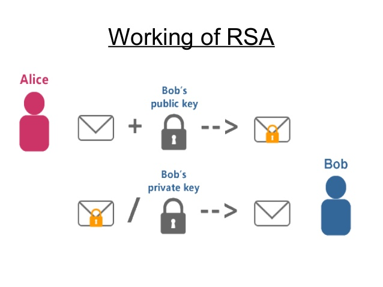

支持python 2.7 或者 python 3.5 以上版本
使用豆瓣pypi源来安装rsa
pip install -i https://pypi.douban.com/simple rsaimport rsa
# 一、生成512位的公私钥对
# a. lemon_pub为PublicKey对象, lemon_priv为PrivateKey对象
# b. 512为秘钥的位数, 可以自定义指定, 例如: 128、256、512、1024、2048等
lemon_pub, lemon_priv = rsa.newkeys(512)
print(lemon_pub)
print(lemon_priv)import rsa
# 1、接收者(柠檬小姐姐)生成512位公私钥对
# a. lemon_pub为PublicKey对象, lemon_priv为PrivateKey对象
# b. 512为秘钥的位数, 可以自定义指定, 例如: 128、256、512、1024、2048等
lemon_pub, lemon_priv = rsa.newkeys(512)
# 2、发送者(可优)使用接收者(柠檬小姐姐)的公钥去加密消息
# rsa只能处理字节类型, 故字符串类型需要转化为字节类型
love_talk = "Lemon little girl, I love you very much!".encode("utf-8")
cryto_info = rsa.encrypt(love_talk, lemon_pub) # 使用接收者(柠檬小姐姐)的公钥加密
# 3. 接收者(柠檬小姐姐)使用自己的私钥去解密消息
talk_real = rsa.decrypt(cryto_info, lemon_priv)
talk_real = talk_real.decode("utf-8")
print(talk_real)
# 导入base64模块来进行base64编码
import base64
import rsa
class HandleSign:
# 定义服务器公钥, 往往可以存放在公钥文件中
server_pub = """
-----BEGIN PUBLIC KEY-----
MIGfMA0GCSqGSIb3DQEBAQUAA4GNADCBiQKBgQDQENQujkLfZfc5Tu9Z1LprzedE
O3F7gs+7bzrgPsMl29LemonPYvIG8C604CprLittlenJpnhWu2lGirlWZyLq6sBr
tuPorOc42+gInFfyhJAwdZB6Sqlove7bW+jNe5youDtU7very6Gx+muchGo8Dg+S
kKlZFc8Br7SHtbL2tQIDAQAB
-----END PUBLIC KEY-----
"""
@classmethod
def to_encrypt(cls, msg, pub_key=None):
"""
非对称加密
:param msg: 待加密字符串或者字节
:param pub_key: 公钥
:return: base64密文字符串
"""
if isinstance(msg, str): # 如果msg为字符串, 则转化为字节类型
msg = msg.encode('utf-8')
elif isinstance(msg, bytes): # 如果msg为字节类型, 则无需处理
pass
else: # 否则抛出异常
raise TypeError('msg必须为字符串或者字节类型!')
if not pub_key: # 如果pub_key为空, 则使用全局公钥
pub_key = cls.server_pub.encode("utf-8")
elif isinstance(pub_key, str): # 如果pub_key为字符串, 则转化为字节类型
pub_key = pub_key.encode('utf-8')
elif isinstance(pub_key, bytes): # 如果msg为字节类型, 则无需处理
pass
else: # 否则抛出异常
raise TypeError('pub_key必须为None、字符串或者字节类型!')
public_key_obj = rsa.PublicKey.load_pkcs1_openssl_pem(pub_key) # 创建 PublicKey 对象
cryto_msg = rsa.encrypt(msg, public_key_obj) # 生成加密文本
cipher_base64 = base64.b64encode(cryto_msg) # 将加密文本转化为 base64 编码
return cipher_base64.decode() # 将字节类型的 base64 编码转化为字符串类型
if __name__ == '__main__':
# 待加密字符串或者字节
love_talk = "Lemon little girl, I love you very much!"
# 调用to_encrypt类方法来进行加密
cryto_info = HandleSign.to_encrypt(love_talk)
print(cryto_info)